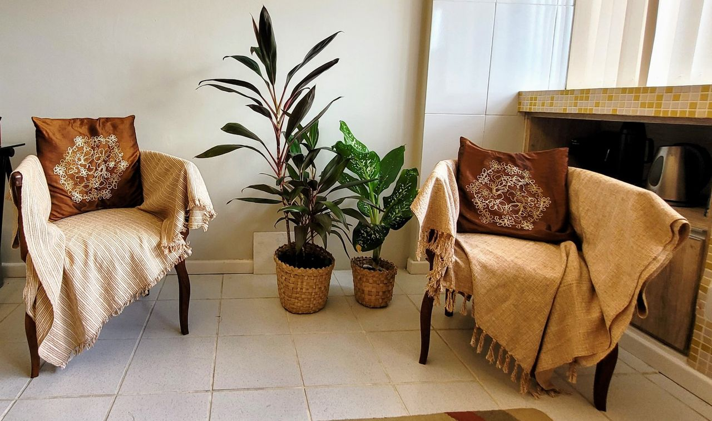

01
Casal e família
Presencial · AracajuMuita gente adia a terapia de casal com medo de que alguém escolha um lado. Eu não tomo partido. Observo, pontuo o jogo de culpa ou de poder que se repete e explico por quê. O consultório não é lugar de litígio.
Estou do lado da melhoria da relação de ambos.